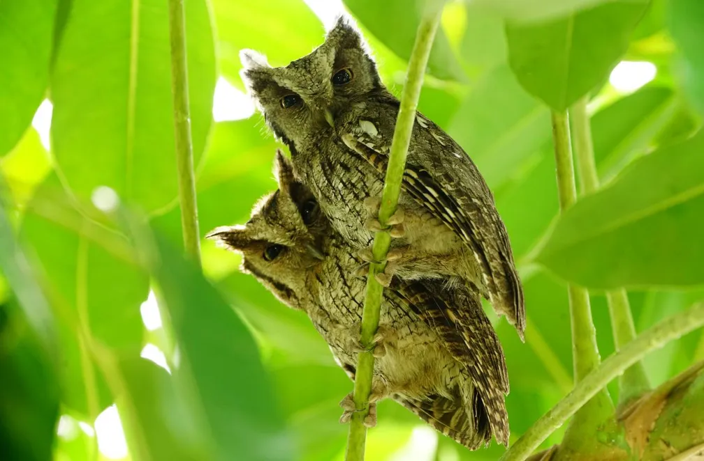

o sabiá-laranjeira é conhecido pelo canto melodioso. Com mais de 20 centímetros, apresenta uma
plumagem
característica que lhe dá o nome popular. O ventre é laranja e o dorso acinzentado. Possui um anel ocular
amarelo ao redor dos olhos que permite uma identificação mais precisa. Se alimenta de insetos, larvas, minhocas
e frutos. É uma das aves que está presente em poesias e composições brasileiras. Distribui-se do Nordeste ao Sul
do Brasil e pode ser facilmente encontrado em grandes pólos, como São Paulo.
Estrelinha-ametista
Calliphlox amethystina
Esta joia viva é um dos menores beija-flores do Brasil. O macho mede 8,5 centímetros e a fêmea
é ainda menor. O nome popular se dá graças à característica exclusiva do macho, que tem a garganta em tom
ametista. A fêmea é discreta e não apresenta o colorido evidente. É reconhecido, principalmente, por emitir um
som de zumbido quando está em voo, e por isso é facilmente confundido com um besouro, abelha ou mamangava. Se
alimenta de pequenos insetos e néctar. No período reprodutivo, o macho realiza um balé no ar para atrair a
parceira. Ocorre em quase todo o Brasil, e é mais comum nas regiões Nordeste, Sudeste e Sul do país.
Picapau verde barrado
Colaptes melanochloros
É uma espécie fácil de ser identificada. Apresenta o topo da cabeça em evidente contraste de
penas negras e vermelhas. Mede quase 30 centímetros e macho e fêmea são semelhantes. A diferença se dá nas penas
mais vibrantes do parceiro e na faixa vermelha rente ao bico, que só o macho tem. Se alimenta de formigas,
cupins e larvas que encontra nos troncos e ocos das árvores. Se reproduz em cavidades que criam com o próprio
bico. Ocorre em quase todo o Brasil, exceto na região Norte e no noroeste da floresta Amazônica.
Saíra amarela
Tangara cayana
Encanta pelo colorido das penas. O macho apresenta asas e cauda azuis, o corpo
predominantemente amarelo e uma faixa negra que vai da face até o inferior da barriga. A fêmea se assemelha ao
parceiro, porém não tem a faixa na barriga nem na face, e é muito mais discreta. Ocorre em matas abertas e
ciliares, parques e jardins. Vive aos pares ou em pequenos grupos. Alimenta-se de insetos e frutos. Ocorre em
quase todo o Brasil, exceto na região Sul.
Corujinha do mato
Megascops choliba
É uma coruja-pequena, que não ultrapassa os 30 centímetros. Apresenta uma plumagem cinza com
detalhes em branco e preto que a ajudam a se camuflar com maestria nos troncos das árvores. Pode ser reconhecida
por possuir dois pequenos "chifres" no topo da cabeça. Tem uma dieta variada que inclui insetos, baratas e
roedores. Se reproduz em ocos de árvores e cavidades que geralmente são abertas por pica-paus ou outras aves.
Possui um canto forte, composto por um característico trinado que geralmente é emitido ao anoitecer. É comum em
áreas urbanas e está presente em todo o país.

Japu
Psarocolius decumanus
Tem a plumagem predominantemente negra e olhos azuis. Macho e fêmea apresentam o mesmo traje,
a diferença entre eles se dá pelo tamanho - o macho é maior e pode atingir 50 centímetros. Possui a cauda
amarela e o inferior castanho. É reconhecido à distância pela forte vocalização metálica. Ao cantar, abre as
asas e movimenta o corpo todo, como se estivesse se apresentando ao público. Constrói o ninho em colônias, em
formato de bolsa. Ocorre em quase todo o país, com exceção da região Nordeste e do estado do Rio Grande do Sul.
Sabiá do Campo
Mimus saturninus
Com quase 30 centímetros de comprimento, esta ave esbanja elegância. Chama atenção pela cauda
longa que costuma eriçar para cima ao caminhar pelo chão. Não à toa, é popularmente conhecido também como
sabiá-levanta-rabo ou arrebita-rabo. Vive em pequenos grupos e tem habilidade de imitar o canto de outras
espécies. A dieta é composta principalmente por frutos e insetos. Pode ser encontrado no Nordeste, Sul, Sudeste,
e Centro-oeste do Brasil. É considerado comum em áreas urbanas e quintais.
Besourinho de bico vermelho
Chlorostilbon lucidus
Este pequeno colibri, que pode atingir 10 centímetros, ganha o nome popular devido ao bico
avermelhado. O macho da espécie, quando exposto ao sol, apresenta as penas brilhantes em tons que variam do
verde, azul, até o dourado. A fêmea é mais discreta, tem a parte interior branca e uma faixa negra rente aos
olhos. Se alimenta de néctar e insetos, e dificilmente pousa nesse momento. Constrói o ninho com ramos, folhas,
líquens e teia de aranha. Distribui-se pelas regiões Nordeste, Sudeste e Sul do Brasil. Flores como a
grevílea-anã atraem esse tesouro para o jardim.
Jacuaçu
Penelope obscura
De plumagem discreta, se destaca pelo porte avantajado e por apresentar uma barbela vermelha.
Mede mais de 70 centímetros, tem as penas escuras e o peito estriado. Vive em casais ou grupos de até dez
indivíduos. Alimenta-se de frutas, folhas, grãos e insetos. Faz o ninho no alto das árvores e até em troncos
caídos. O casal é monogâmico e geralmente tem de dois a três filhotes. Habita matas secundárias, plantações e
matas de galeria. Distribui-se pelo Sudeste e Sul do Brasil.
Pitiguari
Cyclarhis gujanensis
Ave fácil de ouvir e difícil de avistar, assim é o pitiguari. De longe parece discreto, mas
possui uma plumagem refinada e repleta de detalhes. Tem o bico robusto e na lateral da cabeça apresenta penas
cinzas. O alto é castanho e próximo aos olhos tem uma mancha avermelhada. O ventre é claro e contrasta com uma
faixa amarela que atravessa o peito. Com uma vocalização alta e variada, é reconhecido mesmo de longe. Um dos
chamados lembra o assobio de uma pessoa. Alimentação é baseada em frutos, insetos e também filhotes de outras
aves. Com o bico robusto, consegue destroçar pequenos lagartos. Presente em todo o Brasil, inclusive em
quintais, praças e parques.
Gralha do campo
Cyanocorax cristatellus
Parente dos corvos, as gralhas são consideradas uma das aves mais inteligentes do mundo. Vivem
em bandos e são reconhecidas de longe por emitir uma forte e estridente vocalização. Chama atenção pelo
contraste das penas: o inferior é branco, as asas e o dorso são azulados, e a cabeça é negra, com um charmoso
topete. Se alimenta de frutos, insetos, pequenos répteis, ovos e filhotes de outras aves. A reprodução é
cooperativa, ou seja, várias fêmeas colocam os ovos em um único ninho e todos do grupo ajudam na proteção e
cuidado com a prole. Espécie comum do Cerrado e com ampla distribuição. Presente no Sudeste, Centro-oeste e
Nordeste do país.
Tesourinha da mata
Phibalura flavirostris
Exclusiva da Mata Atlântica, é uma ave muito almejada pelos observadores de aves. Com cerca de
20 centímetros, apresenta o corpo em tons de amarelo, com detalhes em preto, bem como a parte das asas e da
cauda.Tem habilidade para se camuflar nas árvores. O macho chama atenção pelos tons vibrantes e a fêmea é mais
discreta. Possui uma máscara negra ao redor dos olhos e a cauda bifurcada que lembra uma tesoura. Se alimenta de
insetos e pequenos frutos. Faz migrações pouco conhecidas pela ciência. É uma ave difícil de ser avistada e está
diretamente associada a áreas de florestas preservadas. Pode ser encontrada em partes de Minas e do Sul da Bahia
ao Rio Grande do Sul.
Corruíra
Pitangus sulphuratus
De porte pequeno e cores discretas, a corruíra pode parecer uma ave sem graça, mas é uma das
espécies mais curiosas para se observar na cidade. Com pouco mais de dez centímetros, se locomove com agilidade
e nem sempre facilita o clique para o observador. Tem o hábito de saltitar pelo chão. É conhecida pela
vocalização estridente. Se alimenta de pequenos insetos e faz o ninho em cavidades, seja em buracos na parede ou
até em caixas de correio. Está presente em todo o Brasil.
Bem-te-vi
Pitangus sulphuratus
Considerado uma das aves mais populares do Brasil, o bem-te-vi é facilmente reconhecido pelo
visual e, claro, pela característica vocalização, em que parece dizer o próprio nome. Mede pouco mais de 20
centímetros. Possui o dorso e a barriga em tons de amarelo, as asas são castanhas, a garganta é esbranquiçada.
Já a face é negra com uma faixa branca na parte superior dos olhos. Se alimenta de insetos, frutas e também ovos
e filhotes de outras aves. É comum ser observado defendendo o território, inclusive perseguindo grandes
predadores como o tucanuçu e gaviões. Ocorre em todo o Brasil e até mesmo dentro de centros urbanos.
Tucanuçu
Ramphastos toco
É o maior tucano do Brasil e também o mais conhecido. Em algumas localidades, recebe o nome
popular de tucano-toco. Se destaca pelo bico comprido laranja e por apresentar as penas em preto, branco e
detalhes na parte inferior da cauda em tons vermelho. Inquieto, pode ser observado pulando de galho em galho.
Vive em casais ou em grupos com mais de dez indivíduos. É facilmente reconhecido pelo som que emite. Alimenta-se
de frutos, insetos, artrópodes e filhotes de outras aves. Reproduz em árvores ocas, barrancos ou cupinzeiros.
Ocorre em quase todo o Brasil, com exceção de alguns estados do Nordeste.